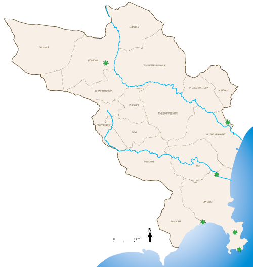
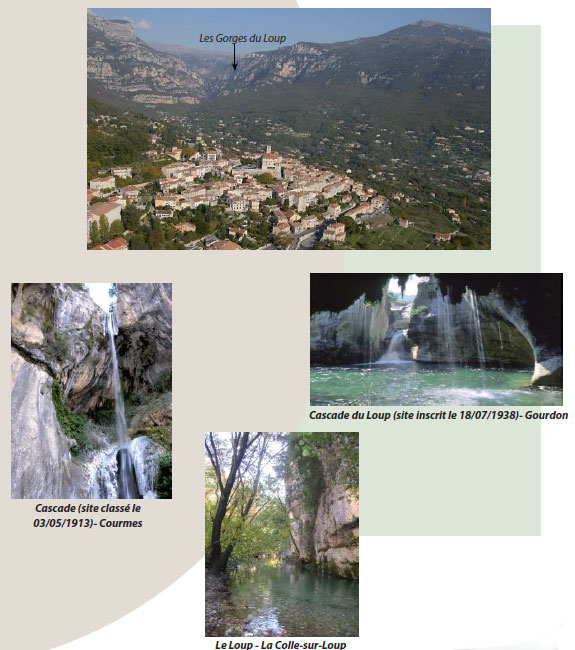
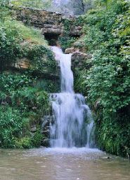
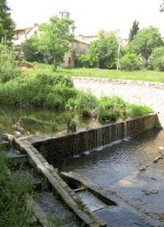

Les paysages - L'eau - Les axes bleus
Les fleuves qui modèlent le relief de la CASA sont des continuités dans la lecture topographique du territoire.

Le Loup, petit fleuve qui prend sa source sur la commune d’Andon à une altitude de 1217 m, traverse l’ensemble du territoire et est à l’origine d’événements topographiques qui structurent le paysage. Il dessine plusieurs entités remarquables facilement identifiables. Il se jette dans la baie des Anges, 48 km plus loin, à la limite des communes de Cagnes-sur-Mer et de Villeneuve-Loubet.
Le cours du Loup passe en contrebas des villages de Gourdon, Courmes, Le Bar-sur-Loup, Tourrettes-sur-Loup, La Colle-sur-Loup et Villeneuve-Loubet. Le Loup emprunte d’abord un val Ouest-Est, puis s’encaisse lorsqu’il bifurque vers le Sud, franchit même des cascades au «Saut du Loup». Son lit s’élargit momentanément au pied du Bar-sur-Loup pour s’encaisser à nouveau dans les plateaux de l’avant pays et déboucher enfin sur l’étroite plaine de Villeneuve-Loubet. Il garde un débit soutenu en toutes saisons grâce à la présence de couches imperméables qui permettent la circulation souterraine des eaux et leur résurgence. Le Loup a un régime pluvionival torrentiel infl uencé par la fonte des neiges et les événements pluvieux importants.
Cet espace forme un axe bleu qui marque le territoire. Il joue un rôle de coupure naturelle par rapport aux espaces urbains. L’encaissement de la vallée permet à cet espace de servir de zone refuge pour de nombreuses espèces animales et végétales. En eff et, 15% de la zone
est soumise à l’inventaire Natura 2000 et 66% à l’inventaire écologique ZNIEFF (Zone naturelle d’intérêt écologique, faunistique et fl oristique) de type 1. C’est aussi un axe important pour la pénétration des espèces maritimes
vers l’amont.
Entre fonds de vallée larges et agricoles surlesquels s’est appuyée l’urbanisation, la vallée encaissée est marquée de quelques points d’accueil touristique (campings, loisirs nautiques etc.)

La Brague prend ses sources à Châteauneuf et parcourt 20 km avant de rejoindre la mer au Nord d’Antibes.
Le bassin versant de la Brague couvre une partie du territoire de la CASA mais aussi les communes de Grasse, Mougins et Mouans-Sartoux, sur 70km². Les ruisseaux de la Valmasque et des Bouillides qui drainent le revers du plateau de Valbonne ainsi que les vallons des Combes et des Horts encaissés dans les collines de Biot sont ses principaux affluents.
Sa pente moyenne varie de 1,7% en moyenne sur la partie amont et médiane, à 0,4% dans la basse vallée.
Le cours d’eau a un régime torrentiel avec des crues au printemps, automne et hiver. En été, les étiages et infi ltration sont trés sévères. Les pompages alimentent les arrosages de jardins, les piscines et les golfs (8 golfs sont implantés sur le bassin versant de la Brague). Au cours des deux dernières décennies, la pression des prélèvements s’est nettement accrue.
La traversée du parc de Sophia entre Valbonne et Biot constitue le secteur humide de la moyenne vallée de la Brague.
En traversant le plateau calcaire, la rivière a creusé un vallon assez profond qui s’élargit sur le sol marneux de Valbonne.
Cet espace humide constitue un corridor écologique où sont présentes des espèces protégées La zone est assez fréquentée par le public à partir du parc naturel départemental de la Brague. En eff et, un sentier, longeant la rivière, permet de rejoindre Biot à Valbonne à pied.
La basse vallée de la Brague correspond à une plaine alluviale (Biot et Antibes).
Elle est composée de zones humides en relation avec la nappe phréatique. Cet espace abrite quelques-unes des dernières prairies humides de la zone littorale du département, présentant une remarquable richesse floristique d’espèces protégées, ce qui en fait une véritable coupure verte. En eff et, 79% de la zone est soumise à l’inventaire écologique ZNIEFF (Zone naturelle d’intérêt écologique, faunistique et fl oristique) de type 1. De nombreux oiseaux migrateurs utilisent ce site, par ailleurs particulièrement riche en insectes, comme zone de repos lors des migrations.
Du point de vue des risques naturels, c’est une zone d’extension des crues.
Des activités de loisirs liés à l’eau sont présentes avec un nombre important de campings dans la plaine alluviale.

Source de la Brague - Châteauneuf

La passe à poissons - Valbonne
Retrouvez toutes les informations sur le site www.riviere-brague.fr http://www.riviere-brague.fr